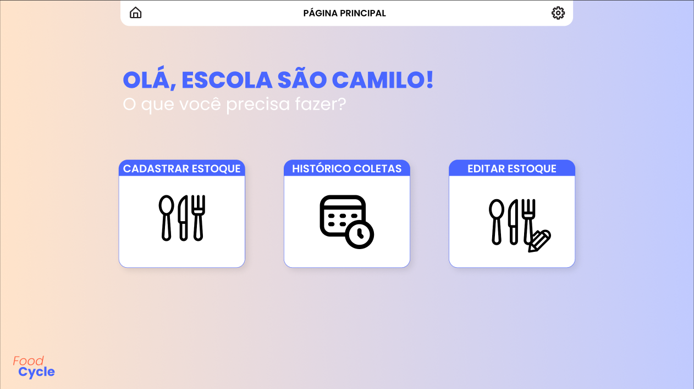

Lunari é um jogo de suspense desenvolvido no motor RPG Maker.
Na pele de Naomi, uma cientista, o jogador precisa para desvendar os mistérios que assolam a nave
Lunari.
Este é o meu mais recente jogo lançado no RPG Maker. Se tornou um dos meus projetos favoritos.
Lançado no final de 2024, Lunari explora temas que sempre gostei, como futurismo,
amor, música e superação.
Arconomicon é um jogo de tabuleiro criado para a disciplina de Design de
Games.
Os jogadores assumem o papel de magos que buscam o lendário Arconomicon.
Fui o responsável pela criação das peças, do logotipo, do mapa (tabuleiro), desenvolvimento das
mecânicas de cartas (personagens, itens, inimigos, armadilhas e magias), história e ambientação do
jogo.
Atualmente, o jogo está sendo remontado, em equipe, para ser nossa apresentação de
TCC.
Somnia: Onyrium é um jogo de suspense em que interpretamos Aela, uma
garota de olhos roxos que busca encontrar o motivo do desaparecimento de sua família.
O jogo foi feito no motor RPG Maker MV, contando com alguns enigmas para o jogador resolver.
O jogo é o remake do meu primeiro jogo, chamado Somnia. O projeto ao qual recebeu "Melhor Narrativa"
no evento de RPG Maker Prêmio
Indiestar.
Desenvolvimento de design de interface para um aplicativo mobile.
O protótipo foi criado com o objetivo de facilitar o gerenciamento de agendamentos em barbearias,
permitindo que os estabelecimentos se cadastrem e disponibilizem horários para que os clientes
possam agendar seus atendimentos de forma prática e rápida.
Tecnologias utilizadas: Figma (protótipo de alta fidelidade), Notion (planejamento
do projeto) e Astah (diagramação de classes).
O protótipo pode ser visto por completo clicando aqui!
FoodCycle - Spassu Tecnologia
Protótipo de aplicativo focado na redução de desperdício de alimentos.

Participei do desenvolvimento de um protótipo de site durante o evento InovaApps,
um desafio de inovação com duração de 15 horas.
O projeto consistiu na criação de um site fictício para uma empresa, permitindo que instituições
pudessem sinalizar a disponibilidade de alimentos excedentes, facilitando a redistribuição para
outras organizações necessitadas.
Tecnologias utilizadas: Figma (protótipo de alta fidelidade), Notion (Roteirização
do Projeto) e Astah (diagramação de classes).
O protótipo pode ser visto por completo clicando aqui!
Criação de Conteúdo
ArtieMaps - Canal no Youtube
Meu canal no YouTube dedicado ao mapeamento parallax para jogos desenvolvidos no RPG Maker.
Embora ainda conte com apenas 8 vídeos, o canal já ultrapassou 5 mil visualizações, com feedbacks
bastante positivos da comunidade.
Crio vídeos temáticos para meus amigos, com o objetivo de aumentar a imersão durante nossas sessões
de RPG de Mesa.
Este vídeo em especial apresenta o Acampamento Night Springs, um local assombrado dentro da campanha.
Ele foi feito no estilo de um comercial fictício, como se estivesse promovendo o próprio acampamento
da história.
Já este vídeo foi criado como uma forma de imersão ao final de um capítulo da nossa campanha. Ele
mostra o ponto de vista do vilão da história, o mesmo que havia interagido com os jogadores durante
a sessão.
Foi uma maneira de reforçar a presença dele sem mostrar tudo de forma explícita.
TikTok - Bruxa Emellyn
Versão do canal voltada para o TikTok, com foco em vídeos curtos sobre os vídeos do canal do
Youtube.
Sempre tive contato com a tecnologia, o que me levou a escolher o curso de
Ciência da Computação. Desde jovem, sou apaixonado por criar e desenvolver coisas novas. Meu primeiro
contato com o desenvolvimento de jogos foi com o RPG Maker, e foi com ele que lancei meu primeiro jogo, que
acabou ganhando o prêmio de "Melhor Narrativa" em um evento.
Após essa experiência, comecei a me aventurar no desenvolvimento de protótipos
para a web, utilizando o Figma. Através da faculdade, aprendi sobre UX e UI, e desde então venho aplicando
esses conhecimentos nos meus projetos, buscando sempre aprimorar minhas habilidades na área.
Além do desenvolvimento, também me dedico à escrita. A criação de mundos e
histórias é uma das minhas grandes paixões.
Tenho experiência com algumas linguagens de programação, graças ao andar da
minha formação. Gosto de aprender de forma prática.